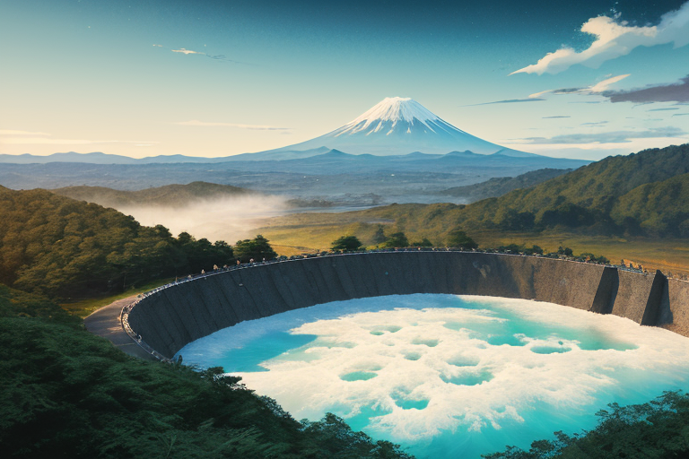
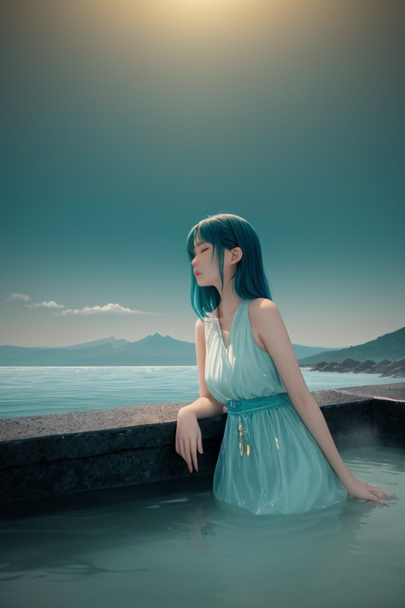
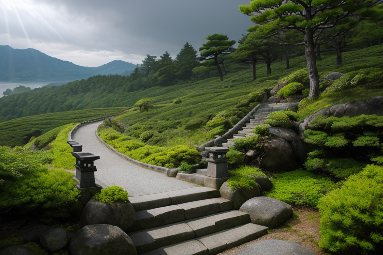
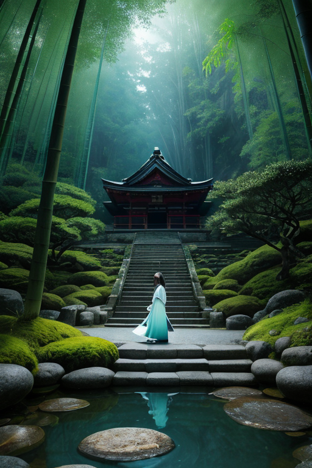
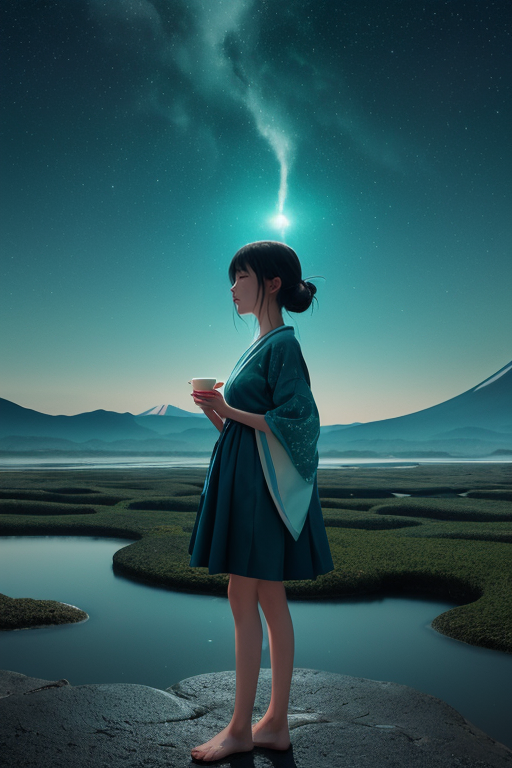

第一章 現実の静岡
あなたはまだ気づいていない。この土地にも、王がいることを。
三保の松原の先、青い海の向こうに、白い山は静かに横たわっている。それは絵画のような絶景であり、同時に巨大な封印である。この国で最も均整のとれた美しさを持つ富士は、今、眠っている。いや、正確には、眠らされている。世界線「富士封」の下、その膨大なエネルギーは均衡の名の下に封じ込められ、山肌に刻まれた無数の調整術式によって、完璧な静寂が保たれている。
茶畑が緑の波を打ち、浜名湖ではうなぎが静かに泳ぐ。東海道を踏みしめた無数の足音は歴史となり、駿府城跡に家康が見た晩年の平穏が、今もこの土地の空気に溶け込んでいる。すべてが程よく、穏やかだ。みかんの甘さも、修善寺の湯けむりも、久能山東照宮の荘厳さも、過不足なく配置されている。
しかし、地中深く、プレートはゆっくりと押し合い、歪みを蓄え続けている。完璧な均衡の裏側で、封じられた力が、ほんのわずか、まぶたを震わせた。均衡は止まることか、それとも、それは次の動きのための深呼吸なのか。誰もその問いに気づかず、桜エビが漁られる海は、今日も凪いでいた。

第二章 歪みの兆候
三保の松原から望む富士は、今日も完璧な逆三角形を描いていた。水平線と空、海と松林、すべてが計算された均衡の中に収まっている。均整王スルガリア・エクイノクスは、その景観そのものが王国の紋章であるかのように、静かに浜辺に立っていた。彼の手元では、妖精エクイナが山海のエネルギーの微細な流れを調整し、スルガミアが海から立ち昇る水蒸気と富士の地熱との均衡を保っていた。
しかし、彼だけが知っていた。この完璧すぎる均衡が、かえって不穏なのだ。歪みは消えたわけではない。プレートの圧力は、この「完璧な均衡」という名の封印によって、一点に集中しつつあった。久能山東照宮の石段に、理由もなく転がり落ちた小石。修善寺の湯船に、一瞬だけ現れた渦。浜名湖のうなぎが、なぜか一斉に深場へ潜った。
「均衡は、止まることか」
王が呟くと、エクイナが小さく首を傾げた。彼女にはまだ、この問いの重さはわからない。王は、富士宮の方角を見つめた。地中深く、封じられた力が、ほんのわずか、まぶたを震わせた。それは、破綻の前兆なのか、それとも新たな均衡への胎動なのか。答えは、まだ歪みの彼方にあった。

第三章 王の葛藤
久能山東照宮の石段を、王はゆっくりと上った。家康が隠居の地として選んだこの場所は、権力からの退場、つまり一つの「均衡の停止」の地でもある。静寂に満ちた社殿の前で、王は自問した。この三百年、富士の怒りを封じ、歪みを水平に保つことこそが使命だった。しかし、地中から伝わる微かな鼓動は、封じ込められた力そのものが新たな歪みを生み出し始めていることを告げていた。
「解放すれば、短期的な破局は避けられません」
エクイナが、浜名湖と富士山頂を結ぶ見えないエネルギーの糸を指でなぞりながら言った。
「ですが、このままでは、封じ込める力が、いつか自らを食い破ります」
王は目を閉じた。瞼の裏に、三保の松原の松と富士の均衡した景観が浮かぶ。止まった均衡はもはや均衡ではない。それは硬直だ。しかし、動き始めた均衡は、制御を失う危険を孕む。茶畑が育つ穏やかな斜面も、桜えびが泳ぐ駿河湾も、すべてはこの危うい均衡の上に成り立っていた。
「わたしたちは、調整者です」
スルガミアが、海と山の間に立つ王の袖に触れた。
「破壊者でも、創造者でもなく。ただ、流れを微調整するだけです」
王は、封じられた力の脈動を、自身の鼓動のように感じた。解放は災厄をもたらす。維持は緩慢な死を招く。この狭間で、王は初めて、苦いという感情の名を知った。

第四章 妖精との対話
修善寺の竹林を抜けた先の、苔むした石段の上で、エクイナが語り始めた。その声は、湧き水が岩を伝うようだった。
「富士は、かつて王の星がこの地に下した最大の『錘』でした。歪みの列島の、最も重い均衡点。しかし、その力はあまりにも強大で、時に自らを、周囲を傷つけた。ゆえに、我々はその力を『封じた』のです」
スルガミアが、浜名湖の水面を撫でるように手を動かした。「封じるとは、眠らせること。動かない錘は、ただの重石。しかし、動かないからこそ、安定の基点たり得た。これが、スルガリアの均衡でした」
「では、今その錘が揺らぎ始めているのは？」王が問う。
二体の妖精は顔を見合わせた。エクイナが答えた。「長い安定は、新たな歪みを生みます。封じられた力は、解放を求めて脈打つ。均衡とは、決して止まった状態ではない。微細な動きの連続なのです。止まる均衡は、死です」
王は、久能山東照宮の静謐な石垣を思い浮かべた。家康が隠居の地に選んだこの均衡の地で、今、最も危うい均衡が問われようとしていた。

第五章 微調整と余韻
王は、富士宮の地中深くに沈む歪みの錘へと意識を向けた。封じられた力は、長い眠りから覚め、静かに脈打っていた。これを押し込めることは、新たな歪みを生む。王が選んだのは、調整だった。膨張する力を、三保の松原の松風に乗せて分散させ、浜名湖の水面に波紋として逃がす。修善寺の湯煙に溶かし、茶畑の緑に吸収させる。微細な、絶え間ない調整の連鎖。それは、止まることのない均衡の在り方だった。
代償は、この地の「豊かさ」の一部だった。今年のみかんは少し酸味が強く、桜エビの漁は数日早く終わる。うなぎの脂は、ほんの少し控えめになるだろう。目に見えぬ均衡の維持は、目に見えぬ犠牲の上に成り立つ。
王は、穏やかな表情のまま、微調整を続けた。感情らしきものが胸を掠めても、それは静かに平衡へと収束していく。富士は静かに佇み、水平円は回転をやめない。
均衡は、止まらない。止まれば、それは死だ。ゆえに王は、今日も、見えざる錘の動きに耳を澄ませ、微かな調整を繰り返す。静謐の裏側で、不穏な力と踊り続けるために。
あなたの町にも、王がいる。